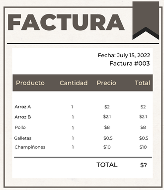

Funciones, módulos y bibliotecas¶
Determina cuáles de las siguientes afirmaciones son verdaderas a cerca de las funciones en Excel y Python
a. Las funciones en Excel las descargamos de paquetes externos.
b. En Python las funciones se pueden crear utilizando la palabra function.
c. Podemos crear funciones en Excel a partir de macros.
d. En Python no tenemos funciones predefinidas.
Respuesta
La opción verdadera es:
- c. Podemos crear funciones en Excel a partir de macros.
¿Qué son las keywords en Python?
a. Son claves que combinan las funcionalidades de bibliotecas.
b. Son contraseñas para descargar archivos Python.
c. Son palabras especiales dentro del lenguaje.
d. Son nombres de funciones en Python.
e. Ninguna de las anteriores
Respuesta
- c. Son palabras especiales dentro del lenguaje.
Las palabra reservadas o keywords son palabras especiales que tienen significados y propósitos determinados dentro del lenguaje. Estás palabras siempre están disponibles. Las palabras clave de Python son diferentes de las funciones y tipos incorporados de Python.
Una biblioteca en Python es un conjunto de funciones, módulos y paquetes
- Verdadero
- Falso
Respuesta
- Verdadero.
En Python una biblioteca o librería como se ha popularizado, es un conjunto de funcionalidades (módulos y paquetes) que puede ser utilizado en uno o varios programas de forma simultánea y responden a tareas específicas.
¿Cómo se importan las bibliotecas/módulos en Python?
a. import nombre_biblioteca
b. read nombre_biblioteca
c. as nombre_biblioteca
d. Ninguna de las anteriores.
Respuesta
-
import nombre_biblioteca.
Para importar bibliotecas, módulos y paquetes se utiliza la palabra import y el nombre de la biblioteca o paquete.
Datos de tipo Fecha¶
Para manejar las fechas y horas en Python debemos utilizar el módulo datadate
- Verdadero
- Falso
Success
- Falso.
El módulo de Python permite manejar fechas y horas es
datetime, que forma parte de la biblioteca estándar.
En una celda de código crea una variable que contenga tu fecha actual y luego crea otra con la fecha en la posición 3456 (fromtimestamp). Calcula la diferencia entre esas dos fechas.
Respuesta
import datetime
hoy = datetime.datetime.today()
fecha = datetime.datetime.fromtimestamp(3456)
hoy - fecha
datetime.timedelta(days=19188, seconds=54731, microseconds=754007)
Comparación de funciones de Excel y funciones de Python¶
Las funciones de Excel son imposibles de replicar en Python
- Verdadero
- Falso
Respuesta
Falso. Las funciones de Excel se pueden replicar en Python, necesitamos conocer algunos módulos, bibliotecas o paquetes o simplemente crear nuestras propias funciones.
Si queremos calcular la raíz cuadrada de algunos valores, ¿qué función debería utilizar si hemos importado el módulo math?
sqrtrootraiz- Ninguna de las anteriores
Respuesta
sqrt: Devuelve la raíz cuadrada de x.
Supongamos que hemos ido a un supermercado y decidimos comprar los siguientes productos, almacena la siguiente información en
- Dos listas
- Dos tuplas
- Una lista de listas en la que cada producto y su precio sea una lista.
- Un diccionario

Luego, determina cuál es el precio más alto, el precio mínimo, la cantidad de productos y la suma total de los precios de los productos. Esto a través de funciones de Python.
Respuesta
-
productos = ['Arroz A', 'Arroz B', 'Pollo', 'Galletas', 'Champiñones'] precios = [2, 2.1, 8, 0.5, 10] -
productos_tupla = ('Arroz A', 'Arroz B', 'Pollo', 'Galletas', 'Champiñones') precios_tupla = (2, 2.1, 8, 0.5, 10) -
ll_productos = [['Arroz A', 2], ['Arroz B', 2.1], ['Pollo', 8], ['Galletas', 0.5], ['Champiñones', 10]] -
dic_productos = {'Arroz A': 2, 'Arroz B': 2.1, 'Pollo': 8, 'Galletas': 0.5, 'Champiñones': 10} dic_productos = {'productos': productos, 'precios': precios} -
El precio más alto es 10, lo podemos calcular a partir de
max(precios) -
El precio mínimo es 0.5$, se puede calcular con
min(precios) - La cantidad total de productos
len(precios) - La suma total de los precios es 22.6$, se puede calcular mediante
sum(precios)
Si lo haces de forma distinta puedes dejarnos un comentario para conocer tus grandiosas ideas